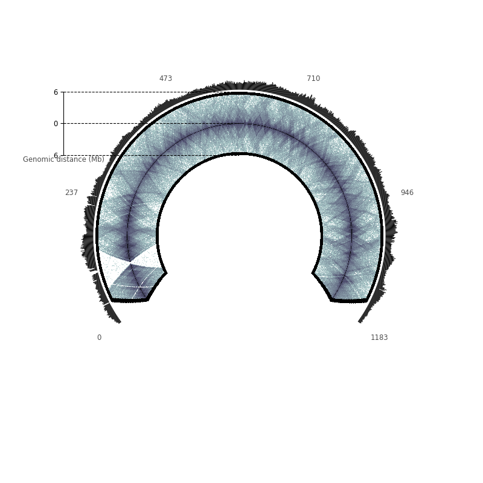

Note
Click here to download the full example code or to run this example in your browser via Binder
A human chromosome: KBM7’s chr11¶
Here, we plot the raw contact counts of KBM7’s chromosome 11, and the cumulative raw contact counts.
Out:
Text(0, 1.03, 'Genomic distance (Mb)')
from circhic import CircHiCFigure, datasets
data = datasets.load_kbm7()
counts = data["counts"]
lengths = data["nbins"]
cum_raw_counts = counts.sum(axis=1)
circfig = CircHiCFigure(lengths, chromosome_type="linear")
circfig.plot_hic(counts, inner_radius=0.5, outer_radius=0.89, cmap="bone_r",
inner_gdis=80, outer_gdis=80)
_, ax = circfig.plot_bars(
cum_raw_counts,
inner_radius=0.9,
outer_radius=0.99,
color="0")
circfig.set_genomic_ticklabels(
fontdict={"fontsize": "small", "color": "0.3"})
rax = circfig.plot_raxis()
rax.set_yticklabels(["6", "0", "6"], fontsize="small")
rax.set_ylabel("Genomic distance (Mb)", fontsize="small", color="0.3",
position=(0, 1.03))
Total running time of the script: ( 0 minutes 9.031 seconds)